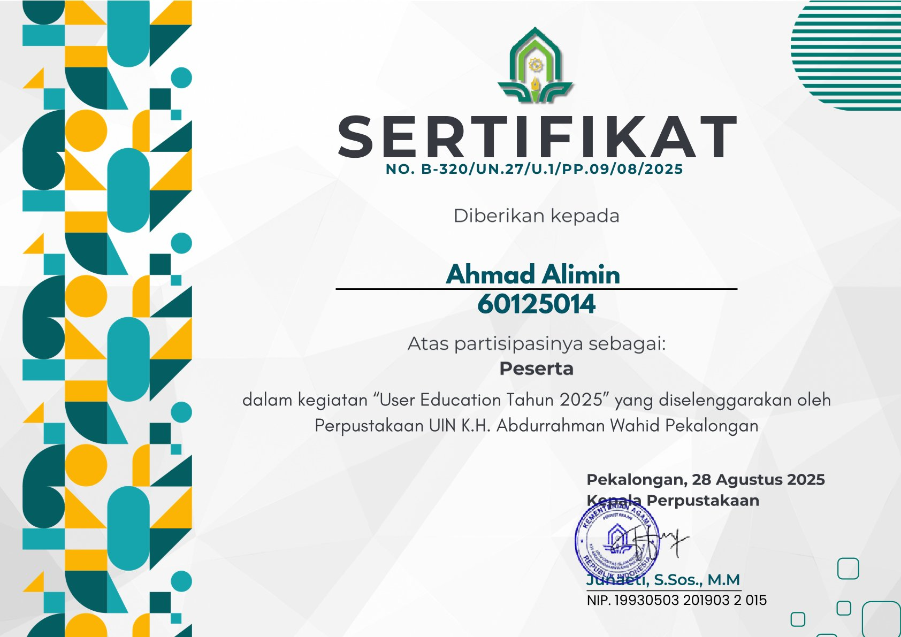
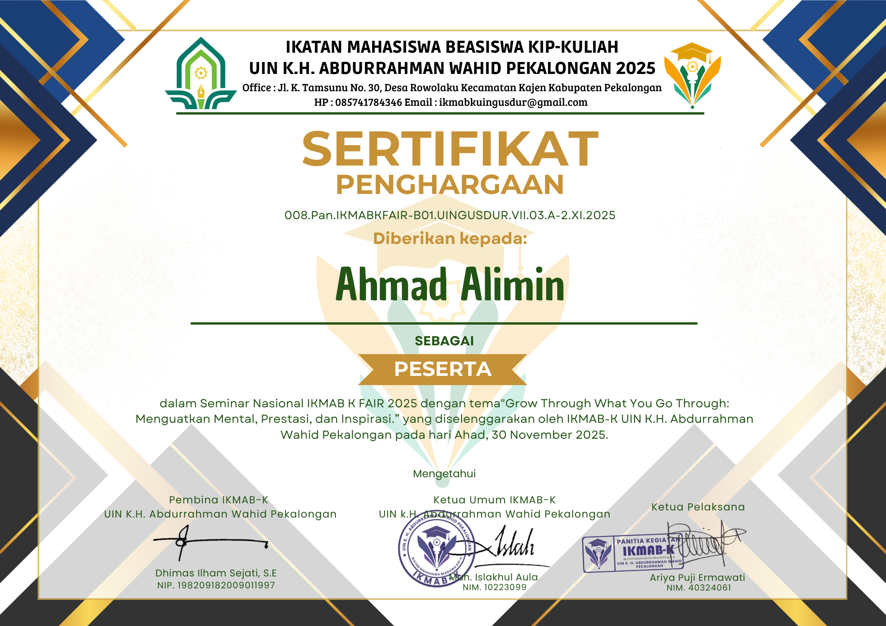
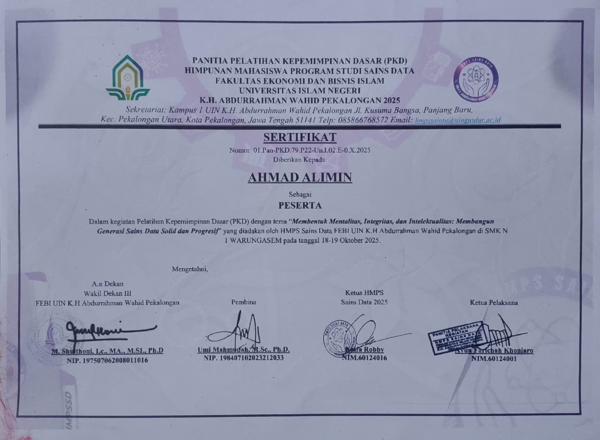
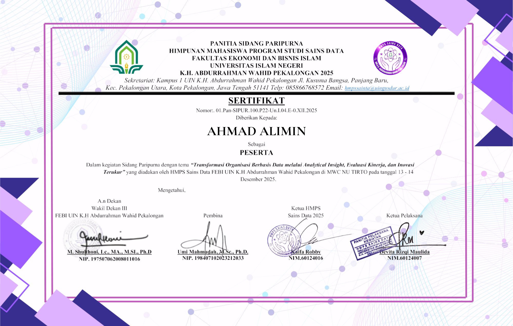

Sertifikasi & Penghargaan
Bukti kompetensi saya dalam bidang Sains Data, Kepemimpinan Organisasi, serta Literasi Sistem Informasi Academic.
workspace_premium 4 Sertifikat
Resmi
calendar_month 2024 –
2025
school UIN K.H. Abdurrahman
Wahid

DATA
ANALYTICS
DES 2025
Sidang Paripurna: Analytical Insight
HMPS Sains Data FEBI UIN Pekalongan
Verifikasi Kredensial open_in_new
MOTIVATION
NOV 2025
Seminar Nasional: IKMAB K FAIR
IKMAB-K UIN Pekalongan
Verifikasi Kredensial open_in_new
LEADERSHIP
OKT 2025
PKD: Generasi Sains Data
HMPS Sains Data FEBI UIN Pekalongan
Verifikasi Kredensial open_in_new
EDUCATION
AGU 2025
User Education 2025
Perpustakaan UIN Pekalongan
Verifikasi Kredensial open_in_new